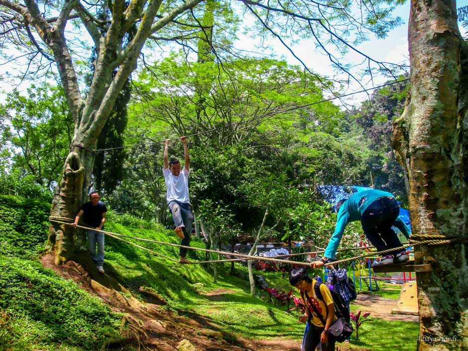

About Taman Selecta
Selecta Malang merupakan destinasi wisata favorit di kota Batu Malang. Hal ini tidak luput dari tingginya peminat pengunjung hendak menikmati panorama kebun bunga serta wahana Selecta Malang. Ketenaran wisata ini sudah terkenal hingga seluruh penjuru nusantara, terlihat tinggi nya antusias para pengunjung setiap hari terutama ketika tiba akhir pekan dan libur panjang.
Sensasi suasana udara sejuk dan panorama yang indah membuat pengunjung betah berlama lama di kota Batu Malang terutama wisata Selecta Malang. Lokasi Selecta Batu Malang ini terletak di desa Tulungrejo, kecamatan Bumiaji, Kota Wisata Batu. Apabila perjalanan dari pusat kota Malang sekitar 25 KM, sedangkan jarak dari pusat kota Batu hanya sekitar 4 KM saja.
Fasilitas yang di sediakan oleh Taman Selecta

Hotel penginapan
